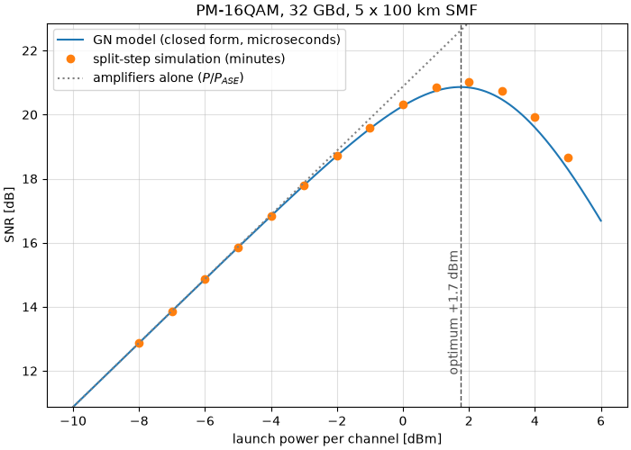
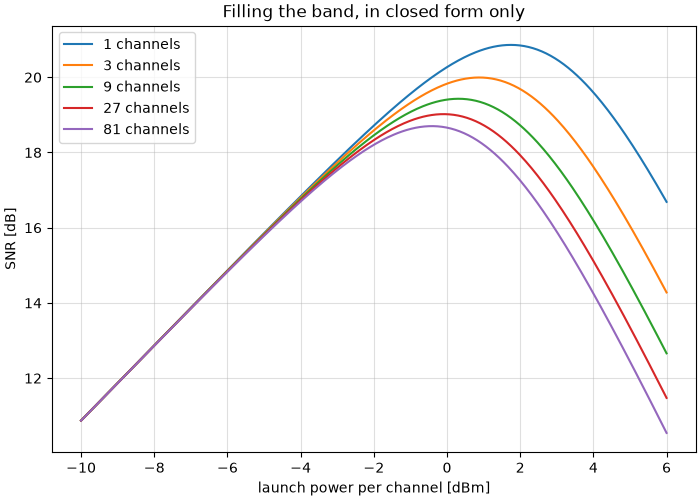

The Gaussian Noise Model#
In this tutorial we answer the question every optical link designer has to answer – how much power should I launch? – twice. Once by simulating the fibre, which takes minutes, and once with a closed-form expression that takes microseconds. Then we put the two on the same axes and look at how close they land.
Note
Before you start. Optical Fiber Link Simulation Tutorial propagated a signal through fibre with the split-step method and undid the damage with digital back-propagation. This tutorial keeps the same propagation and asks a different question: not how do I repair the nonlinearity, but how much of it will there be, and what launch power minimizes the total damage.
What you’ll learn:
Why an optical link has an optimum launch power, and why turning the laser up eventually makes things worse.
What the Gaussian Noise (GN) model is, in one equation, and how to use it.
How to read the model’s three characteristic behaviours: the cube law, the half-the-ASE rule, and the logarithmic price of bandwidth.
How well a closed form can replace a split-step simulation – measured, on the same figure.
The one thing the model cannot see, and how big it is.
Introduction#
A fibre span attenuates. An amplifier puts the power back and adds spontaneous-emission noise, so over \(N_s\) spans the receiver sees a fixed noise power \(P_{\mathrm{ASE}}\). That alone would say: launch as much power as the laser can give, since the signal grows and the noise does not.
The fibre disagrees. Its refractive index depends on the intensity travelling through it – the Kerr effect – so the signal distorts itself, and the distortion grows faster than the signal does. After enough uncompensated dispersion the propagating waveform looks like Gaussian noise to itself, and the distortion it produces behaves like one more additive noise. That is the whole content of the GN model, and it makes the link an additive-noise channel with two terms:
The numerator is linear in the launch power and the second term of the denominator is cubic, so there is a best \(P\) and it is not the largest one. Everything below follows from that single expression.
Prerequisites#
Make sure you have the following Python libraries installed:
numpy
matplotlib
comnumpy
Import Libraries#
import time
import numpy as np
import matplotlib.pyplot as plt
from comnumpy.core import Sequential
from comnumpy.core.filters import SRRCFilter
from comnumpy.core.processors import Amplifier, Downsampler, Upsampler
from comnumpy.core.utils import get_alphabet
from comnumpy.optical.dbp import DBP
from comnumpy.optical.fiber import FiberSpec
from comnumpy.optical.gn_model import (gn_model_nli_power, gn_model_snr,
optimal_launch_power)
from comnumpy.optical.links import FiberLink
Define Parameters#
Five 100 km spans of standard single-mode fibre, PM-16QAM at 32 GBd. The signal has two polarizations: this is not decoration, it is the case the model is written for, and the next section explains what happens if you forget it.
img_dir = "../../docs/examples/img/"
# The link. Standard single-mode fibre, five 100 km spans, one erbium
# amplifier per span putting back exactly what the span took away.
SMF = FiberSpec(0.2, gamma=1.3, cd_coefficient=17.0, wavelength_nm=1550.0)
BAUD = 32e9
SPAN_KM = 100.0
N_SPANS = 5
NF_dB = 6.0
# The waveform. Two polarizations, 16QAM on each, root-raised-cosine
# pulses at four samples per symbol.
OS = 4
N_SYM = 4096
ROLLOFF = 0.1
FS = BAUD * OS
ALPHABET = get_alphabet("QAM", 16)
The chain#
The transmitter and receiver are the ones from the previous tutorial, with one change worth stopping on.
def transmitter(power_W):
"""Symbols in, waveform out, at the requested launch power.
``power_W`` is the power of the channel, i.e. the *sum* over the two
polarizations -- the convention the GN model uses -- so each
polarization carries half of it. Getting this wrong is a 3 dB error
in the launch power and therefore a 9 dB error in the nonlinear
interference, which is the single easiest way to make a correct
model look broken.
"""
return Sequential([
Upsampler(OS, scale=np.sqrt(OS)),
SRRCFilter(ROLLOFF, OS, N_h=40, method="fft"),
Amplifier(np.sqrt(power_W / 2)),
], name="transmitter")
def receiver(power_W, name="receiver"):
"""Waveform in, symbols out. The only equalizer is linear."""
return Sequential([
DBP(N_SPANS, L_span=SPAN_KM, StPS=1, fs=FS, fiber=SMF,
use_only_linear=True),
SRRCFilter(ROLLOFF, OS, N_h=40, method="fft", scale=1 / np.sqrt(OS)),
Downsampler(OS),
Amplifier(1 / np.sqrt(power_W / 2)),
], name=name)
def link(*, kerr, noise, StPS=40):
return FiberLink(N_SPANS, L_span=SPAN_KM, StPS=StPS, fs=FS, fiber=SMF,
use_only_linear=not kerr,
noise_scaling=1.0 if noise else 0.0, NF_dB=NF_dB,
seed=7, name="fibre")
flowchart LR
upsampler["Upsampler"]
srrcfilter["SRRCFilter"]
signal_amplifier["Amplifier"]
fibre["FiberLink"]
dbp["DBP"]
srrcfilter_2["SRRCFilter"]
downsampler["Downsampler"]
signal_amplifier_2["Amplifier"]
upsampler --> srrcfilter
srrcfilter --> signal_amplifier
signal_amplifier --> fibre
fibre --> dbp
dbp --> srrcfilter_2
srrcfilter_2 --> downsampler
downsampler --> signal_amplifier_2
The diagram is generated by the chain itself – chain.to_mermaid()
(decision D33c) – so it cannot drift from the code.
Warning
The 3 dB that becomes 9 dB. power_W is the power of the channel,
summed over both polarizations, because that is the convention the GN
model uses. Each polarization therefore carries half of it, hence
Amplifier(np.sqrt(power_W / 2)). Give each polarization the full
power_W instead and you launch 3 dB more than you think; since the
nonlinear interference goes as the cube of the power, your simulation then
reports 9 dB more of it than the model predicts, and the model looks
broken when it is not.
The same trap has a second door. FiberLink reads the shape of the
field to decide which equation to integrate: a field (..., 2, N) gets
the Manakov equation, which is what a real fibre with random birefringence
does and what the model’s 16/27 coefficient assumes; a one-dimensional
field gets the scalar equation instead, which produces 27/8 – 5.3 dB
– more interference at the same total power. If you must compare against
a scalar simulation, tell the model so with
gn_model_nli_power(..., polarizations=1).
One number for the whole link#
gn_model_nli_power() collapses the fibre,
the span count and the comb into a single coefficient \(\eta\), defined
by \(P_{\mathrm{NLI}} = \eta P^3\).
# 1. What the closed form says, before a single sample is propagated.
# The GN model turns the whole link into one number: eta, the
# coefficient of the cubic term in P_NLI = eta * P^3.
nli_at_1mW = gn_model_nli_power(SMF, span_length_km=SPAN_KM, n_spans=N_SPANS,
powers_W=np.array([1e-3]),
frequencies_Hz=np.array([SMF.carrier_frequency_Hz]),
baud_rates_Hz=np.array([BAUD]))[0]
eta = nli_at_1mW / (1e-3) ** 3
print(f"GN model: eta = {eta:.4g} /W^2 "
f"({10 * np.log10(eta / 1e6):+.2f} dB in mW^-2)")
# 2. The amplifiers' share. The GN model predicts the fibre's noise; the
# amplifiers' is not its business, so we measure it once -- it does not
# depend on the launch power.
reference = run(1e-3, kerr=False, noise=False)
ase_ratio = noise_to_signal(run(1e-3, kerr=False, noise=True), reference)
ase_W = ase_ratio * 1e-3
print(f"measured ASE over {N_SPANS} spans at NF = {NF_dB:.0f} dB: "
f"{10 * np.log10(ase_W / 1e-3):+.2f} dBm")
The model predicts the fibre’s noise. The amplifiers’ noise is not its business, so we measure that once – it does not depend on the launch power, which is exactly why the two terms compete.
GN model: eta = 1223 /W^2 (-29.12 dB in mW^-2)
measured ASE over 5 spans at NF = 6 dB: -23.89 dBm
With both numbers in hand the design point is a one-liner. Setting the derivative of \(P/(P_{\mathrm{ASE}} + \eta P^3)\) to zero gives a rule worth remembering in words – the optimum is where the fibre’s noise is half the amplifiers’:
# 3. The design point, in closed form: the optimum is where the fibre's
# noise is half the amplifiers'.
best_power, best_snr = optimal_launch_power(ase_W, eta)
print(f"optimum: {10 * np.log10(best_power / 1e-3):+.2f} dBm, "
f"SNR = {10 * np.log10(best_snr):.2f} dB")
print(f"check: eta*P^3 / (P_ASE/2) = {eta * best_power ** 3 / (ase_W / 2):.6f}")
optimum: +1.75 dBm, SNR = 20.86 dB
check: eta*P^3 / (P_ASE/2) = 1.000000
The last line is the rule checked rather than asserted. Two consequences fall out of the same expression. The peak is asymmetric – one side of it is governed by a linear term, the other by a cubic one – so missing the optimum by 1 dB costs 0.24 dB of SNR upwards but only 0.21 dB downwards, and by 3 dB it is 2.20 dB against 1.50 dB. Operators consequently run slightly under the optimum, where a power error is the cheaper kind. And since \(P_{\mathrm{opt}}\) grows only as the cube root of the accumulated ASE, ten times the spans moves the optimum by 3.3 dB, not by 10.
Now the expensive way#
None of the above propagated a single sample. Let us do that too, at fourteen launch powers, and measure the SNR the receiver actually gets.
# 4. And now the expensive way: propagate. Each launch power needs the
# fibre integrated once, which is why this is a `for` loop and not a
# `sweep` -- sweep drives one chain and reads one metric, while every
# point here is a comparison between a run and a noiseless reference.
powers_dBm = np.arange(-8.0, 5.1, 1.0)
measured_snr_dB = []
start = time.perf_counter()
for power_dBm in powers_dBm:
power_W = 1e-3 * 10 ** (power_dBm / 10)
ratio = noise_to_signal(run(power_W, kerr=True, noise=True), reference)
measured_snr_dB.append(-10 * np.log10(ratio))
print(f" {power_dBm:+5.1f} dBm -> SNR {measured_snr_dB[-1]:5.2f} dB")
measured_snr_dB = np.array(measured_snr_dB)
print(f"({time.perf_counter() - start:.0f} s of split-step propagation)")
Note
Why this is a ``for`` loop and not a sweep(). The
sweep of Monte Carlo Simulation over AWGN Channel drives one chain and reads one metric off it. Here
every point is a comparison between two runs – the propagated signal
and a noiseless linear reference – which is one shape too many for the
sweep. When the measurement is not a metric of a single chain, the loop
stays a loop.
The measurement itself is worth a sentence, because “how much noise is there?” has a subtle answer when part of the damage is a phase rotation. One complex scalar is fitted between the received symbols and the reference; it absorbs the gain and the mean nonlinear phase, which is precisely what a carrier-phase estimator removes in a real receiver. Whatever is left over is noise, and the model does not get to argue about where it came from.
def symbols(seed):
"""PM-16QAM: one independent stream per polarization."""
rng = np.random.default_rng(seed)
return ALPHABET[rng.integers(0, ALPHABET.size, (2, N_SYM))]
def noise_to_signal(received, reference):
"""Everything that is not a scaled copy of the reference.
One complex scalar absorbs the gain and the mean nonlinear phase --
which is what a carrier-phase estimator removes in a real receiver --
and what is left is noise, whatever produced it.
"""
gain = np.vdot(reference, received) / np.vdot(reference, reference)
residual = received - gain * reference
return float(np.mean(np.abs(residual) ** 2)
/ (abs(gain) ** 2 * np.mean(np.abs(reference) ** 2)))
def run(power_W, *, kerr, noise, seed=0):
sent = symbols(seed)
waveform = transmitter(power_W)(sent)
return receiver(power_W)(link(kerr=kerr, noise=noise)(waveform))
A few of the fourteen points, and the two lines that follow the loop:
-8.0 dBm -> SNR 12.87 dB
-5.0 dBm -> SNR 15.85 dB
-2.0 dBm -> SNR 18.73 dB
+1.0 dBm -> SNR 20.85 dB
+2.0 dBm -> SNR 21.03 dB
+3.0 dBm -> SNR 20.74 dB
+5.0 dBm -> SNR 18.67 dB
(17 s of split-step propagation)
optimum: +1.75 dBm predicted, +2.0 dBm measured; peak SNR 20.86 dB predicted, 21.03 dB measured
And the two on the same axes:
fine_powers = np.logspace(-1.0, 0.6, 400) * 1e-3
predicted_snr_dB = 10 * np.log10(gn_model_snr(ase_W, eta, fine_powers))
best_measured = powers_dBm[int(np.argmax(measured_snr_dB))]
print(f"optimum: {10 * np.log10(best_power / 1e-3):+.2f} dBm predicted, "
f"{best_measured:+.1f} dBm measured; peak SNR "
f"{10 * np.log10(best_snr):.2f} dB predicted, "
f"{np.max(measured_snr_dB):.2f} dB measured")
_, ax = plt.subplots(figsize=(7, 5), layout="constrained")
ax.plot(10 * np.log10(fine_powers / 1e-3), predicted_snr_dB, "-",
label="GN model (closed form, microseconds)")
ax.plot(powers_dBm, measured_snr_dB, "o",
label="split-step simulation (minutes)")
ax.plot(10 * np.log10(fine_powers / 1e-3),
10 * np.log10(fine_powers / ase_W), ":", color="0.5",
label="amplifiers alone ($P/P_{ASE}$)")
ax.axvline(10 * np.log10(best_power / 1e-3), color="0.3", linestyle="--",
linewidth=1)
ax.annotate(f"optimum {10 * np.log10(best_power / 1e-3):+.1f} dBm",
(10 * np.log10(best_power / 1e-3), np.min(predicted_snr_dB) + 1),
rotation=90, va="bottom", ha="right", color="0.3")
ax.set_xlabel("launch power per channel [dBm]")
ax.set_ylabel("SNR [dB]")
ax.set_title(f"PM-16QAM, {BAUD/1e9:.0f} GBd, {N_SPANS} x {SPAN_KM:.0f} km SMF")
ax.set_ylim(np.min(measured_snr_dB) - 2, np.max(predicted_snr_dB) + 2)
ax.legend()
ax.grid(True, alpha=0.4)
{kind=link}

Three things to read off it. The dotted line is what the link would do if the fibre were linear – straight, rising for ever, which is the answer that made the question interesting. The measured points leave it at around -2 dBm and turn over. And the solid line, computed in microseconds from four fibre parameters, passes through the measured points. The predicted optimum is +1.75 dBm and the simulated curve peaks at +2.0 dBm – the nearest point of a 1 dB grid – with 0.17 dB between the two peak SNRs, for a simulation that took a hundred thousand times longer.
That is the whole value proposition of the model. It is not a substitute for the split step when you need waveforms, constellations or a bit error rate. It is what lets you ask a thousand design questions before you simulate one.
What the closed form buys#
Here is a question the simulation cannot afford: what happens when the channel is not alone, but sits in the middle of a comb filling the amplifier band? Eighty-one channels at 32 GBd is 4 THz of bandwidth; simulating that means a sample rate in the terahertz, and the split step would run for days. The closed form does not care.
# 5. What the closed form buys: questions the simulation cannot afford.
# Filling the amplifier band costs far less than it looks -- the asinh
# again.
print("\nchannels NLI at 0 dBm optimum peak SNR")
counts = [1, 3, 9, 27, 81]
curves = {}
for n_channels in counts:
offsets = 50e9 * (np.arange(n_channels) - (n_channels - 1) / 2)
comb_nli = gn_model_nli_power(
SMF, span_length_km=SPAN_KM, n_spans=N_SPANS,
powers_W=np.full(n_channels, 1e-3),
frequencies_Hz=SMF.carrier_frequency_Hz + offsets,
baud_rates_Hz=np.full(n_channels, BAUD))[n_channels // 2]
comb_eta = comb_nli / (1e-3) ** 3
power, snr = optimal_launch_power(ase_W, comb_eta)
curves[n_channels] = 10 * np.log10(
gn_model_snr(ase_W, comb_eta, fine_powers))
print(f"{n_channels:8d} {10*np.log10(comb_nli/1e-3):+8.2f} dBm "
f"{10*np.log10(power/1e-3):+6.2f} dBm {10*np.log10(snr):6.2f} dB")
channels NLI at 0 dBm optimum peak SNR
1 -29.12 dBm +1.75 dBm 20.86 dB
3 -26.52 dBm +0.88 dBm 19.99 dB
9 -24.83 dBm +0.31 dBm 19.43 dB
27 -23.60 dBm -0.09 dBm 19.02 dB
81 -22.65 dBm -0.41 dBm 18.70 dB
_, ax = plt.subplots(figsize=(7, 5), layout="constrained")
for n_channels in counts:
ax.plot(10 * np.log10(fine_powers / 1e-3), curves[n_channels],
label=f"{n_channels} channels")
ax.set_xlabel("launch power per channel [dBm]")
ax.set_ylabel("SNR [dB]")
ax.set_title("Filling the band, in closed form only")
ax.legend()
ax.grid(True, alpha=0.4)
{kind=link}

Read the first column carefully: eighty-one times the bandwidth costs 6.5 dB of nonlinear interference, not the 19 dB that a proportional penalty would give. The reason is one function. The GN model’s kernel integrates to an \(\mathrm{asinh}\), and \(\mathrm{asinh}\) grows logarithmically, so each doubling of the comb costs a bounded and shrinking amount. The whole viability of wideband optical transmission is in that \(\mathrm{asinh}\), and the peak SNR falls by only 2.2 dB while the link carries eighty-one times as many channels.
What the model cannot see#
The GN model has one assumption in its name: it treats the transmitted signal as Gaussian. A real constellation is not Gaussian. Its fourth moment is smaller, and a signal with a smaller fourth moment generates less nonlinear interference – so the model is systematically pessimistic, and the smaller the constellation the more pessimistic it is.
The model cannot tell us by how much, since it never sees the constellation. So we measure it: the same link, the same launch power, three different things modulated onto the carrier, against one prediction.
# 6. The one thing the model cannot see. It assumes the signal is
# Gaussian; 16QAM is not, and QPSK is less so. Same link, same power,
# three stimuli, one prediction.
def a_nl_dB(draw, power_W=1e-3, seed=0):
rng = np.random.default_rng(seed)
sent = draw(rng)
waveform = transmitter(power_W)(sent)
linear = receiver(power_W)(link(kerr=False, noise=False)(waveform))
kerr = receiver(power_W)(link(kerr=True, noise=False)(waveform))
ratio = noise_to_signal(kerr, linear)
return 10 * np.log10(ratio / power_W ** 2 / 1e6)
def gaussian_draw(rng):
return (rng.standard_normal((2, N_SYM))
+ 1j * rng.standard_normal((2, N_SYM))) / np.sqrt(2)
def qam_draw(order):
alphabet = get_alphabet("QAM", order)
return lambda rng: alphabet[rng.integers(0, alphabet.size, (2, N_SYM))]
model_dB = 10 * np.log10(eta / 1e6)
print(f"\nThe GN model predicts a_NL = {model_dB:+.2f} dB whatever is "
f"modulated onto the carrier.")
print("stimulus measured a_NL vs the model vs Gaussian")
measured_a_nl = {}
for label, draw in (("Gaussian", gaussian_draw), ("16QAM", qam_draw(16)),
("QPSK", qam_draw(4))):
measured_a_nl[label] = float(
np.mean([a_nl_dB(draw, seed=seed) for seed in range(3)]))
print(f"{label:10s} {measured_a_nl[label]:+11.2f} dB "
f"{measured_a_nl[label] - model_dB:+9.2f} dB "
f"{measured_a_nl[label] - measured_a_nl['Gaussian']:+8.2f} dB")
The GN model predicts a_NL = -29.12 dB whatever is modulated onto the carrier.
stimulus measured a_NL vs the model vs Gaussian
Gaussian -28.56 dB +0.56 dB +0.00 dB
16QAM -30.06 dB -0.93 dB -1.49 dB
QPSK -30.83 dB -1.71 dB -2.27 dB
print("A Gaussian stimulus lands on the model, as it must. Every real "
"constellation lands")
print("below it, and the smaller the constellation the further below -- "
"that is the EGN")
print("effect, and this library measures it rather than predicting it.")
Every row is a sanity check on the section before it. A Gaussian stimulus lands on the prediction, as it must – the 0.56 dB left over is the model’s other approximation, that spans accumulate incoherently, and it grows with the number of spans. Both real constellations land below, and QPSK, the smallest, lands furthest below.
Closing that last gap is the job of the EGN model (Carena et al., 2014; Serena and Bononi, 2015), which carries the fourth and sixth moments of the constellation through the same perturbation analysis. It is not implemented in this library, and the table above is the honest substitute: the effect measured rather than predicted, so that nobody reads the GN curve as an exact answer for a modulated signal. Read it as what it is – a pessimistic bound that is tight for large constellations, worth about a decibel for PM-16QAM.
Is it right?#
A closed form that agrees with the simulation in the same library proves less
than it looks: both could share a mistake. validation/optical_gn_model.py
therefore confronts it with things outside the library, and prints what it
finds:
Serena and Bononi (JLT 33(7), 2015) published the normalized NLI coefficient of a 15-channel, 5 x 100 km link, measured with their split-step simulator: \(a_{\mathrm{NL}} = -23.5\) dB. This module returns -23.30 dB for the same link.
The same closed form re-transcribed from GNPy – the Telecom Infra Project’s open-source planning tool, which works in metres and s²/m where this library works in kilometres and ps²/km – agrees to twelve digits (
tests/optical/test_gn_model.py).This library’s own split-step solver, on a five-channel WDM link where cross-phase modulation dominates, agrees to 0.01 dB.
The 27/8 polarization factor of the warning above, measured by simulating the same link twice, comes out at 5.29 dB against the 5.28 dB of Table I of the paper.
# The chain diagram is exported from the chain itself (D33c), so the
# picture in the tutorial cannot drift from the code.
mermaid_dir = "../../docs/examples/mermaid/"
diagram = Sequential([*transmitter(1e-3).module_list,
link(kerr=True, noise=True),
*receiver(1e-3).module_list], name="GN model link")
with open(f"{mermaid_dir}/gn_model.mmd", "w") as stream:
stream.write(diagram.to_mermaid())
Conclusion#
You have designed an optical link twice, and the two answers agree.
You have learned how to:
Turn a fibre link into one coefficient \(\eta\) with
gn_model_nli_power(), and read an SNR offgn_model_snr().Find the optimal launch power in closed form with
optimal_launch_power(), and remember the rule behind it – the fibre’s noise is half the amplifiers’.Measure nonlinear interference from a split-step run, by fitting one complex scalar and calling the rest noise.
Keep the polarization and power conventions straight, which is worth 9 dB and 5.3 dB of not being confused.
Recognize where the model is a bound rather than an answer.
From here, you can:
Put digital back-propagation back in the receiver (the previous tutorial) and watch the optimum move to higher power as the nonlinearity is partly undone.
Sweep the span length at fixed total distance: the GN model will tell you, in milliseconds, why shorter spans buy reach.
Add a Raman amplifier and recompute \(P_{\mathrm{ASE}}\): the optimum moves as its cube root, and no fibre needs to be re-simulated.
This is the last tutorial of the course. If you have read them in order you have built, measured and validated a chain in every regime the library covers – additive noise, multipath, multiple antennas, coding, shaping and nonlinear fibre – and each time against something that could have said no.